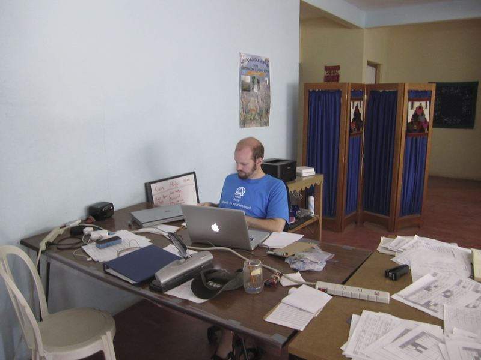

Looking out over the Mountains in the Meꞌphaa speaking area. üòÑ
Looking out over the Mountains in the Meꞌphaa speaking area. üòÑ
Meꞌphaa Language Documentation
 Grammarian of digital file names is the loneliest job of them all.
Categories:
Countries:
Cities:
Organizations:
Hugh Paterson III
Collaborative Scholar
My research interests include typological patterns in articulatory phonetics; User Experience design in language tools; and graph theory applied to language and linguistic resource discovery.
Kevin L. Cline
Linguist
In my retired life I write software for linguists. I focus on software supporting lexicography, grammar analysis, phonological analysis, and scholarly publication.
Marginalia
Headphones for Language Documentation
Headphones impact the perception of sound. They need to be contoled for like a variable in an experiment, within the context of Language Documentation.

Publications
Keyboard layouts: Lessons from the Meꞌphaa and Sochiapam Chinantec designs
A chapter on designing keyboard layouts for tone marking languages following design principles of Dieter Rams.

Las Conexiones Externas e Internas
This paper sets up, in Spanish the names and places and the various socio-linguistic varieties of spoken Me’phaa. This paper appears as …